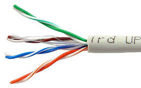

>
FIBRA ÓPTICA Y CABELE UTP
TECNOLOGICO DE ESTUDIOS SUPERIORES DE JOCOTITLAN
INGENIERIA EN SITEMAS COMPUTACIONALES.
REDES DE COMPUTADORAS
TAPIA GUZMÁN JESÚS.
MENA PÉREZ JOSUÉ.
MONROY ORDOÑEZ CÉSAR.

FIBRA OPTICA
La fibra óptica es un medio físico de transmisión de información, usual en redes de datos y telecomunicaciones, que consiste en un filamento delgado de vidrio o de plástico, a través del cual viajan pulsos de luz láser o led, en la cual se contienen los datos a transmitir..
Mas.

UTP
La UTP, Universidad Tecnológica del Perú, es una institución educativa fundada en 1997. Actualmente cuenta con la certificación SUNEDU. Al momento cuenta con una matrícula de más de 20 mil estudiantes en todo el país.
Mas.